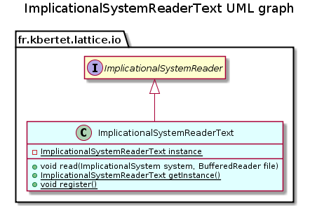

public final class ImplicationalSystemReaderText extends Object implements ImplicationalSystemReader
This class defines the way for reading an implicational system from a text file.

| Modifier and Type | Method and Description |
|---|---|
static ImplicationalSystemReaderText |
getInstance()
Return the singleton instance of this class.
|
void |
read(ImplicationalSystem system,
BufferedReader file)
Saves this component in a file.
|
static void |
register()
Register this class for reading .txt files.
|
public static ImplicationalSystemReaderText getInstance()
Return the singleton instance of this class.
public static void register()
Register this class for reading .txt files.
public void read(ImplicationalSystem system, BufferedReader file) throws IOException
Saves this component in a file.
The following format is used:
An implicational system can be instancied from and save to a text file in the following format: A list of elements separated by a space in the first line ; then, each rule on a line, written like [premise] -> [conclusion] where elements are separated by a space.
a b c d e
a b -> c d
c d -> e
read in interface ImplicationalSystemReadersystem - a system to readfile - a fileIOException - When an IOException occursCopyright © 2010–2014 Karell Bertet. All rights reserved.